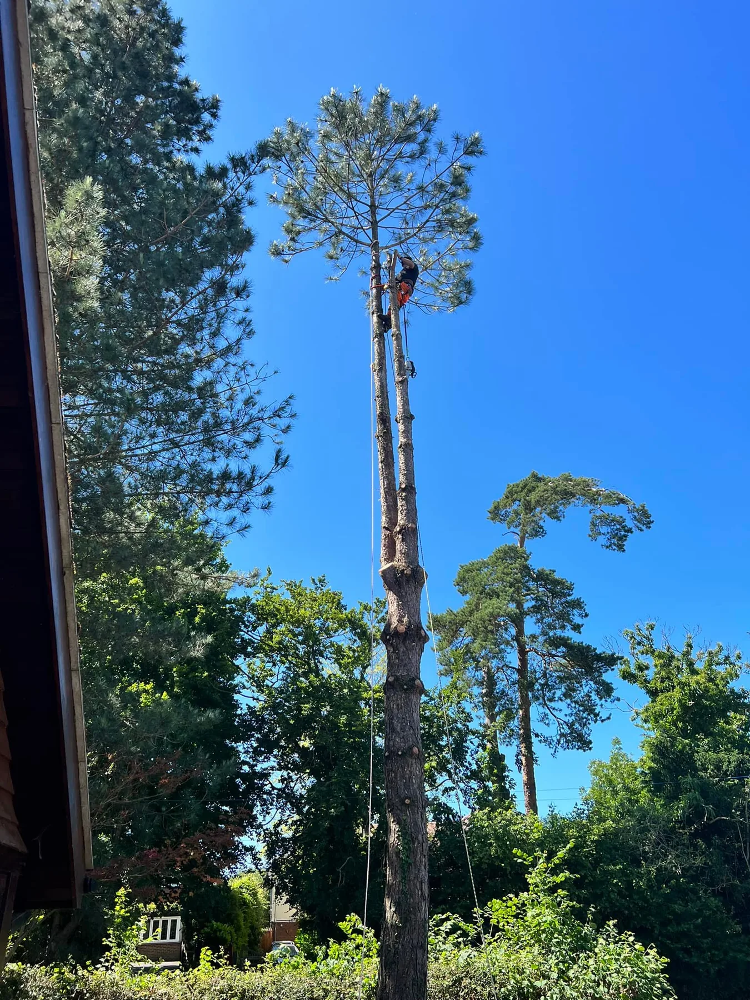
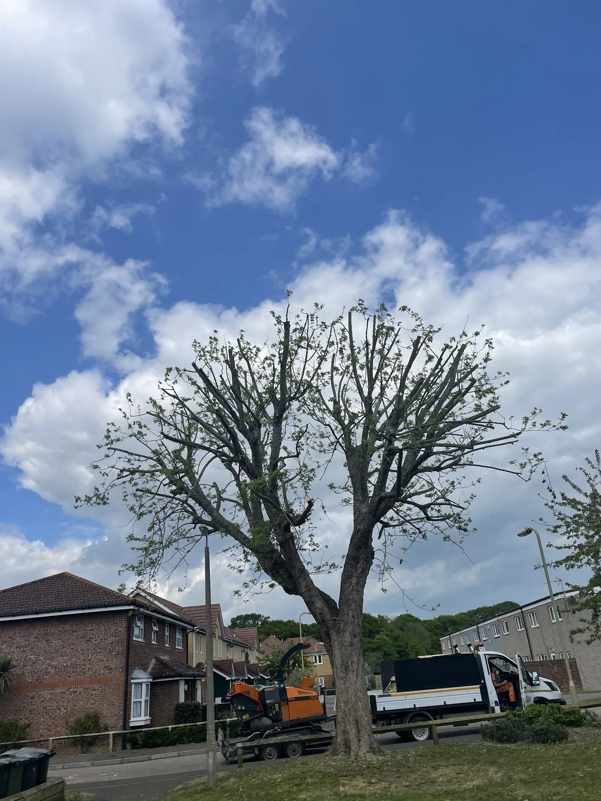
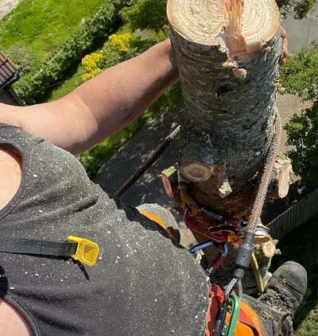
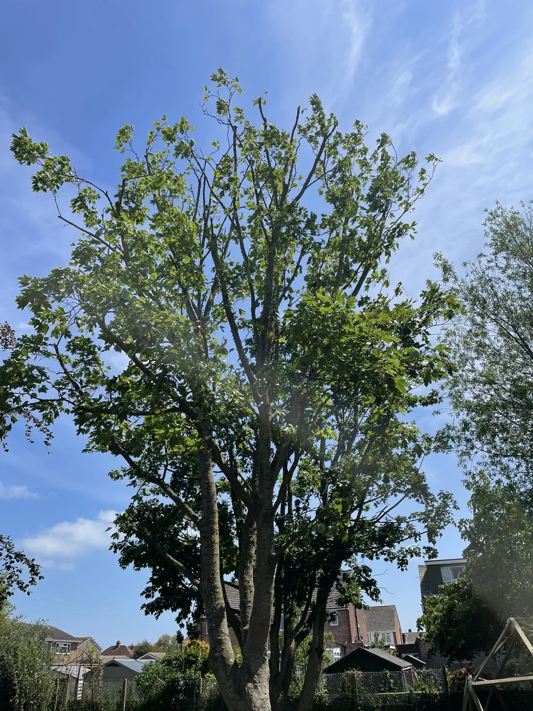

Assess the job
Access, surroundings, condition and the desired outcome all matter.
Tree surgery services
From controlled removals and crown work to pollarding, hedge maintenance and stump removal, Treevolution assesses the tree, access, surroundings and the result you need before recommending the work.

Tree surgery
Controlled felling and sectional dismantling where removal is the appropriate option.

Tree surgery
Crown work to manage size, shape, clearance, balance and deadwood.

Tree surgery
Planned pollarding and repeat management for suitable trees.

Tree surgery
Routine maintenance, reductions and a clean, practical finish.

Tree surgery
A practical finishing service where a remaining stump needs dealing with.

Tree surgery
Clear recommendations when you are unsure what work a tree needs.
Selected work
Working photographs that show the job, the access and the result — from climbing and controlled dismantling to completed reductions and maintenance.
Why Treevolution
Tree surgery is rarely one-size-fits-all. The aim is to understand the tree, the site and what you need before deciding how the work should be approached.
Access, surroundings, condition and the desired outcome all matter.
The method is chosen to suit the tree and the space around it.
Professional tree work with attention to the property and site.
Good tree work includes clearing up properly when the job is done.
Customer feedback
Barrie & Diane“Not only have you done a fantastic job, but it was a pleasure to have two lovely, caring people carrying out the work.”
Local tree surgeons
Treevolution serves Lewes, East and West Sussex, Brighton & Hove and surrounding areas, with wider work where practical.
See areas we cover →Free quotation